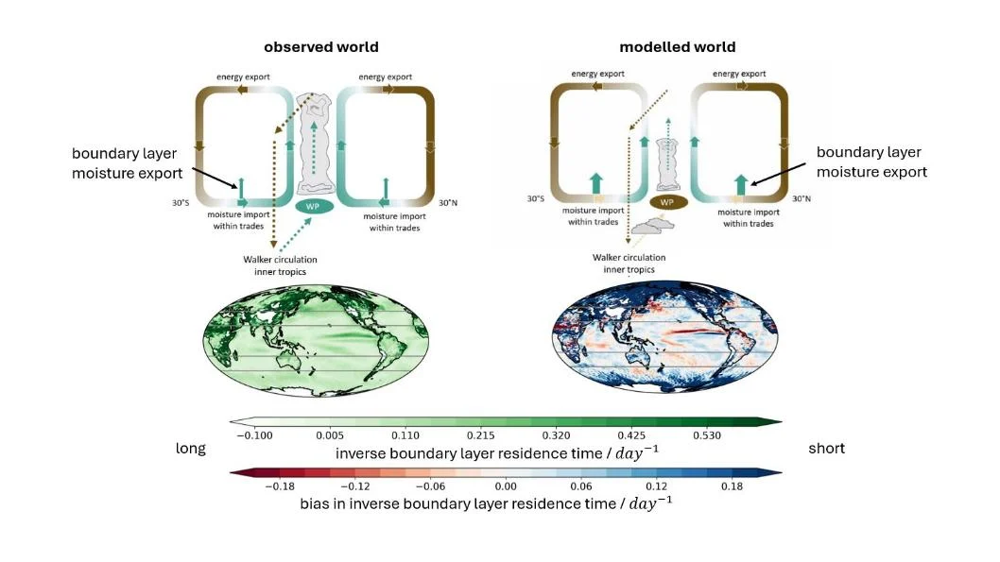

Tackling Persistent Rainfall Biases in Climate Models
One of the most persistent challenges in climate modeling is the double-ITCZ bias—where models simulate excessive rainfall south of the equator and insufficient precipitation along the equator itself. This systematic distortion degrades global projections of tropical climate patterns, including monsoons and El Niño dynamics.
In our research (Kroll et al., 2025), I leverage ICON XPP - a flexible configuration of the ICON model supporting tunable parameterizations—to examine how this bias scales from coarse, parameterization-dependent grids to convection-permitting resolutions.
We demonstrate that the double-ITCZ bias persists even at kilometer-scale resolutions, pointing to fundamental deficiencies in moisture transport and surface–atmosphere interactions. Systematically tracing physical process dynamics across spatial resolutions reveals that resolving tropical rainfall requires more than finer grids or simply omitting parameterization schemes—it demands a refined physical representation of the mechanisms governing Earth's hydrological cycle.
